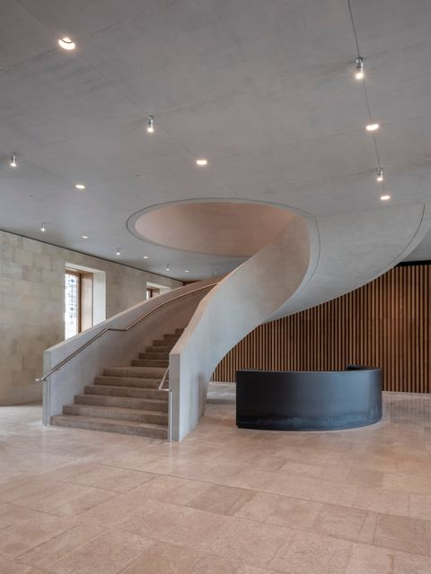

Así se pensó, diseñó y construyó uno de los museos más sostenibles del mundo

El antiguo edificio Pereda de Santander ha alcanzado la máxima calificación BREEAM obtenida por un museo gracias a una rehabilitación que combina soluciones arquitectónicas singulares, tecnologías pioneras y una gestión integral de la…
Dos edificios decimonónicos anexos, sede histórica del Banco Santander en el paseo de Pereda y frente al mar, se han convertido en uno de los museos más excepcionales y sostenibles del mundo. Así lo refleja el 92,96% obtenido en la certificación BREEAM, uno de los sistemas de evaluación con mayor trayectoria y reconocimiento internacional, que analiza distintas categorías como la eficiencia ambiental, el confort o la salubridad.
El resultado de la certificación BREEAM, dice Paula Cruz, responsable de Infraestructuras, Seguridad y Sostenibilidad de Faro Santander, también sirve para procurar que el edificio, una vez inaugurado, “se gestione pensando en el día a día, en la salud y el bienestar de las personas”. Un ejemplo: “El seguimiento continuo de parámetros como la temperatura, la humedad o la calidad del aire permite detectar desviaciones antes de que afecten al confort de los usuarios o a la correcta conservación de las obras expuestas. Del mismo modo, la monitorización de consumos de agua y energía ayuda a anticipar incidencias, detectar posibles fugas o ineficiencias y actuar de forma preventiva”.
Dice Cruz que se trata de un criterio que se extiende más allá de las paredes del museo: “Los proveedores y las empresas colaboradoras deben de compartir los mismos estándares ambientales, sociales y éticos”. Porque, tal como afirma Cruz, “los museos son espacios de conocimiento y aprendizaje, pero también pueden transmitir valores desde la gestión. Contar con una certificación BREEAM tan excepcional demuestra que cultura y sostenibilidad pueden y deben avanzar juntas”.